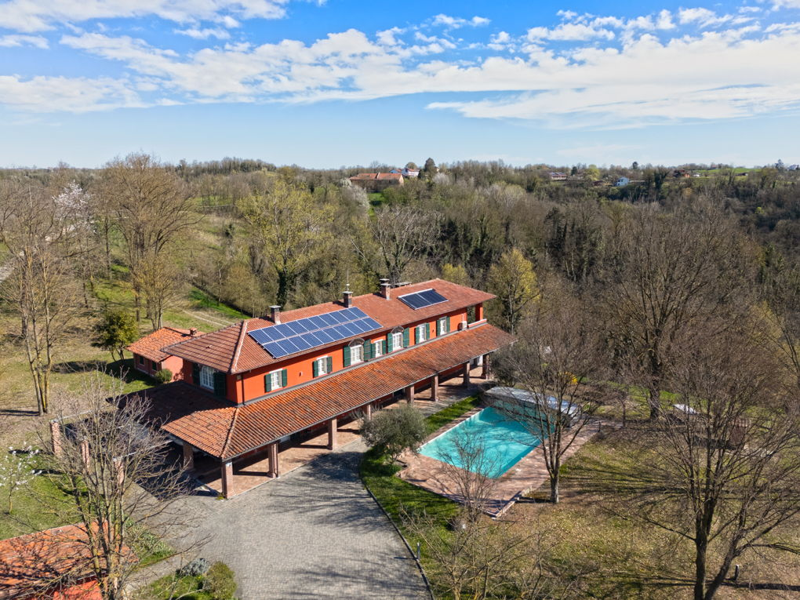

€690.000
Monale, Piedmont
Open the listingDetached early-1900s cascina with fireplace living, guest apartment and a serious built 12×6 saltwater pool with cover — plus ~2,000 m² Barbera vines on ~3.5 ha. €690k restored-with-pool sits under the ~€750k bargain line. Independent of CIP Monferrato keepers.
Opened 2 Sep 2026. salesPrice €690000. 5 bed / 4 bath / 520 m² / plot 30,000. Condition veryGood. PV + solar thermal. Independent of nizza-retreat CV-1681 and mombaruzzo-pool CP-1683.